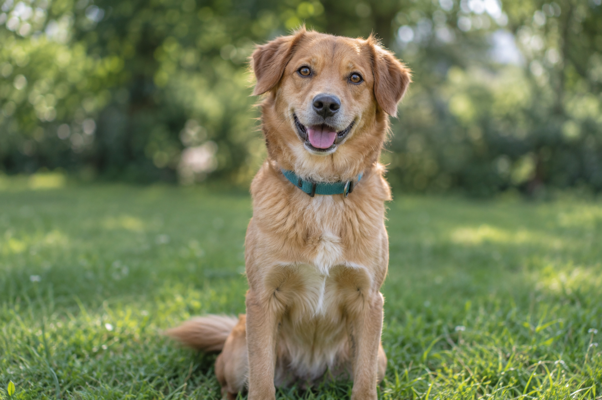

DEMONSTRAÇÃOExplore com dados fictícios. Seus cadastros ficam nesta sessão e desaparecem ao recarregar.
PEQUENAS ATITUDES. GRANDES REENCONTROS.
Uma ajuda para
encontrar seu aumigo.
Cadastre um animal perdido ou procure por quem você viu por aí. O caminho de volta pode começar com você.
Vamos procurar
Todo aumigo merece
encontrar o caminho de casa.
encontrar o caminho de casa.
MURAL DE BUSCAS
Quem você está procurando?
Nenhum aumigo por aqui ainda.
Tente buscar com menos filtros ou cadastre um animal para experimentar.
Não encontrou seu aumigo?
Comece pelo cadastro. Cada detalhe ajuda na busca.